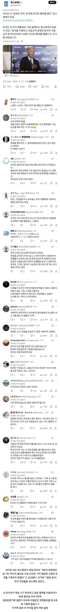

일본에서 난리난 바이든 전대통령 회고록
댓글
어릴때보던 스프리건이란 만화 다시보니 미군 양아치같은 악역들 이름이 팻맨 리틀보이 더라
???: 앗~! 최면이 풀려버렷~!
핵두방으로 일본인 24만명 죽인 미국
손수 총칼로 한국인 총 800만명 죽인 일본
누가더 씹새끼냐
한국인만 죽였나 동북아 동남아 연합군인들 포로들 합치면 몇천만이야
심지어 잔인하게 고문해서 죽인게 일본이고 연합국은 고통없으 한방에 보냈음..
바황상.. 그립습니다
바황상.. 이제야 깨달아요..
일본새기들은참..주기적으로 반일감정을 일깨워줌
원폭 왜 쳐맞았는지는 생각안하는새끼들
조버지
이제야
깨달아요
어찌 그렇게
사셨나요~
누가보면 원폭으로 선빵친줄
원폭을 왜 처맞았는지는 생각을 못하는 염색체 모자란 병신들 ㅋㅋ 피해자 코스프레 좆문가들 ㅋㅋ
당연한 반응이지
저쪽 섬나라는 학교에서 교과서에 없는내용을 교육하는건 불법인 나라잖아
교과서에 원폭맞은것만 기록되어있고 왜 맞았는지는 안적혀있나봄
교육을 안한거지 거짓을 교육한게 아니니까